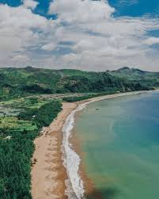
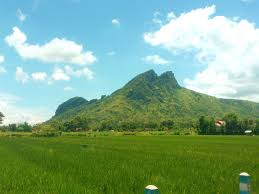

Tourist Attractions
Homepage
Profile
Hometown
Local Food
Tourist Places
Tempat Wajib Dikunjungi Oleh Turis
Pantai Gemah - Berada tidak jauh dari kota

Gunung Budeg - Terletak di Kecamatan Boyolangu

Ranu Gumbolo - Terletak di Kecamatan Pagerwojo